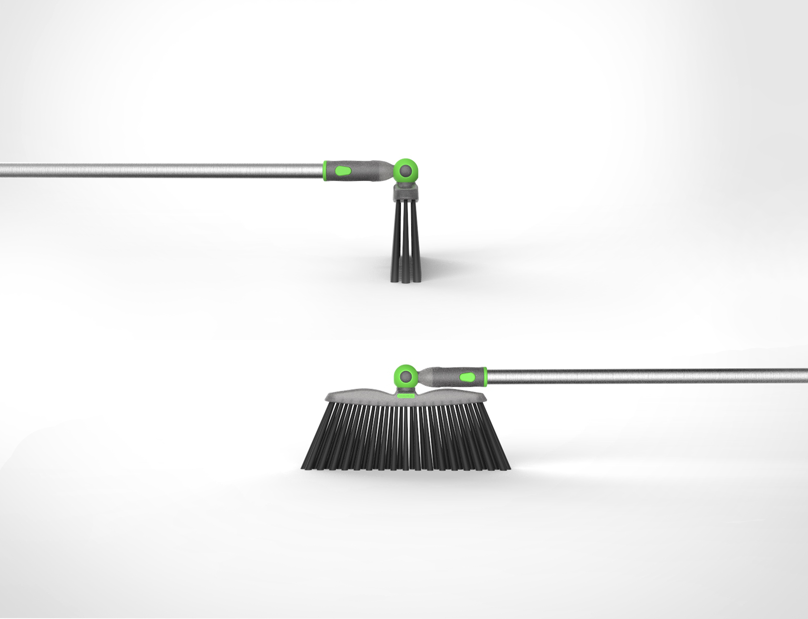

The ball mechanism is very much inspired by the Dyson product line.
The pivot broom can reach any angle and its low profile helps it get anywhere with ease.
A broom that goes where no broom has gone before. The pivot broom swivels side to side as well as back and forth to reach every angle. Whether its getting under the bed or in that awkward gap between the fridge and pantry, the pivot broom gets it all. The comfortable button system makes it much easier to adjust than its competators and it has a snap off pole so it can be used as a hand broom.
August 2017